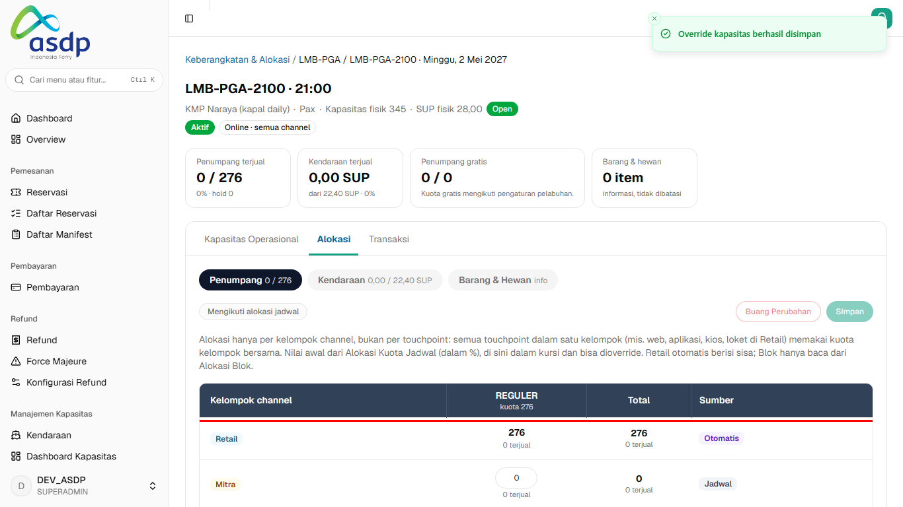

Laporan test
16-11-2026 14:33 · 5 test
Cara membaca: laporan ini hanya menampilkan apa yang diperiksa test. Hijau tidak berarti tidak ada bug.
Test berjenis EKSPLORASI hanya mencetak isi balasan (0 test di run ini), jadi belum menilai sesuai atau tidak.
Masalah yang hanya terlihat di layar (tombol, tulisan, tata letak) tidak terdeteksi.
Temuan tercatat (diperkirakan bug)
TEMUAN Keberangkatan — Kapal override (ubah data + restore) > [Temuan] KA-K11 setelah ganti kapal, jumlah kuota semua kelas di Alokasi seharusnya = Total kuota
UI\keberangkatan-kapal-ubah.spec.ts · PEMERIKSAAN
KA-K11 — Setelah ganti kapal, kuota per kelas tidak menjumlah ke Total kuota
Langkah:
1. Buka detail keberangkatan LMB-PGA-2100 tanggal 2027-05-02
2. Tab Kapasitas Operasional → Kapal (override harian) pilih "KMP Naraya" → Simpan
3. Buka tab Alokasi, jumlahkan "kuota" di judul setiap kolom kelas
Ekspektasi: Jumlah kuota semua kelas = Total kuota (340)
Aktual: Jumlah kuota kelas 276, Total kuota 340 (selisih 64 kursi tidak teralokasi), status tetap "Sesuai kuota"

Bukti screenshot (klik untuk memperbesar) — file: hasil/bukti/KA-K11_20261116-143254.png
Cetakan test
[TEMUAN] KA-K11 — Setelah ganti kapal, kuota per kelas tidak menjumlah ke Total kuota
Langkah:
1. Buka detail keberangkatan LMB-PGA-2100 tanggal 2027-05-02
2. Tab Kapasitas Operasional → Kapal (override harian) pilih "KMP Naraya" → Simpan
3. Buka tab Alokasi, jumlahkan "kuota" di judul setiap kolom kelas
Ekspektasi: Jumlah kuota semua kelas = Total kuota (340)
Aktual: Jumlah kuota kelas 276, Total kuota 340 (selisih 64 kursi tidak teralokasi), status tetap "Sesuai kuota"
(bukti: hasil\bukti\KA-K11_20261116-143254.png)
TEMUAN Keberangkatan — Kapal override (ubah data + restore) > [Negatif] KA-K14 ganti kapal saat alokasi Mitra tersimpan lebih besar dari kuota kapal baru → seharusnya ditolak
UI\keberangkatan-kapal-ubah.spec.ts · PEMERIKSAAN
KA-K15 — Kapal bisa diganti walau kuota kapal baru lebih kecil dari alokasi Mitra yang sudah tersimpan
Langkah:
1. Buka detail keberangkatan LMB-PGA-2100 tanggal 2027-05-02 → tab Alokasi
2. Isi Mitra kelas REGULER = 340 (tepat kuota kelas) → Simpan
3. Tab Kapasitas Operasional → Kapal (override harian) = KMP Naraya → Simpan
Ekspektasi: Ditolak (seperti aturan "ditolak bila kuota baru < hold + terjual"), atau alokasi Mitra disesuaikan ≤ kuota baru
Aktual: Toast "Override kapasitas berhasil disimpan"; kapal sekarang "KMP Naraya (NARAYA)"; kuota kelas REGULER = 276, Mitra = 340

Bukti screenshot (klik untuk memperbesar) — file: hasil/bukti/KA-K15_20261116-143313.png
Cetakan test
[TEMUAN] KA-K15 — Kapal bisa diganti walau kuota kapal baru lebih kecil dari alokasi Mitra yang sudah tersimpan
Langkah:
1. Buka detail keberangkatan LMB-PGA-2100 tanggal 2027-05-02 → tab Alokasi
2. Isi Mitra kelas REGULER = 340 (tepat kuota kelas) → Simpan
3. Tab Kapasitas Operasional → Kapal (override harian) = KMP Naraya → Simpan
Ekspektasi: Ditolak (seperti aturan "ditolak bila kuota baru < hold + terjual"), atau alokasi Mitra disesuaikan ≤ kuota baru
Aktual: Toast "Override kapasitas berhasil disimpan"; kapal sekarang "KMP Naraya (NARAYA)"; kuota kelas REGULER = 276, Mitra = 340
(bukti: hasil\bukti\KA-K15_20261116-143313.png)
Gagal (perlu dicek, belum tentu bug)
Tidak ada test yang gagal.
Gangguan koneksi (bukan bug fitur)
Tidak ada gangguan koneksi.
Hasil eksplorasi (isi cetakan, belum dinilai)
Tidak ada.
Semua test
| No | Berkas | Test | Jenis | Status | Detik |
|---|
| 1 | UI\keberangkatan-kapal-ubah.spec.ts | Keberangkatan — Kapal override (ubah data + restore) > [Positif] KA-K10 ganti kapal → kapasitas fisik, kuota, SUP, mode, & list ikut berubah; lalu kembali ke default |
PEMERIKSAAN | LULUS | 12.4 |
| 2 | UI\keberangkatan-kapal-ubah.spec.ts | Keberangkatan — Kapal override (ubah data + restore) > [Temuan] KA-K11 setelah ganti kapal, jumlah kuota semua kelas di Alokasi seharusnya = Total kuota |
PEMERIKSAAN | LULUS | 5.0 |
| 3 | UI\keberangkatan-kapal-ubah.spec.ts | Keberangkatan — Kapal override (ubah data + restore) > [Positif] KA-K12 kembali ke kapal default → alokasi per kelas pulih seperti awal |
PEMERIKSAAN | LULUS | 6.6 |
| 4 | UI\keberangkatan-kapal-ubah.spec.ts | Keberangkatan — Kapal override (ubah data + restore) > [Edge] KA-K13 kapal default jadwal tidak ditawarkan lagi sebagai kapal pengganti (hanya lewat "Pakai kapal default jadwal") |
PEMERIKSAAN | LULUS | 3.3 |
| 5 | UI\keberangkatan-kapal-ubah.spec.ts | Keberangkatan — Kapal override (ubah data + restore) > [Negatif] KA-K14 ganti kapal saat alokasi Mitra tersimpan lebih besar dari kuota kapal baru → seharusnya ditolak |
PEMERIKSAAN | LULUS | 20.9 |